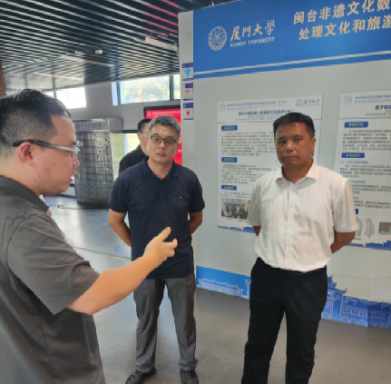
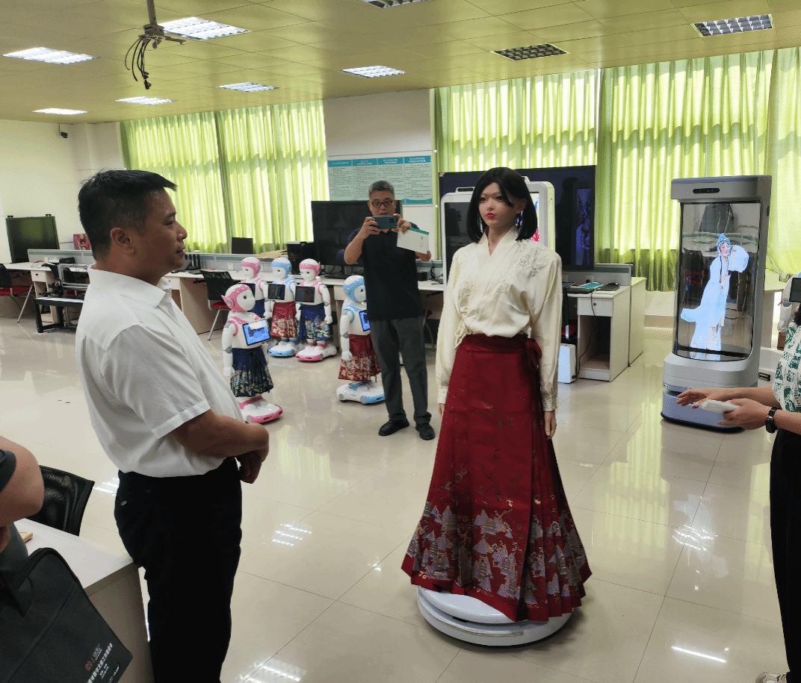
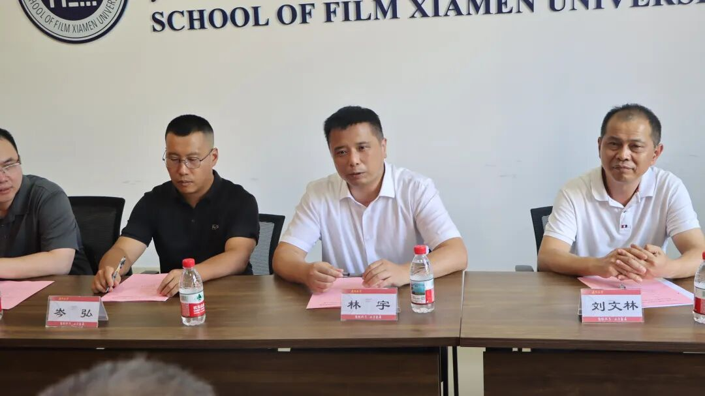
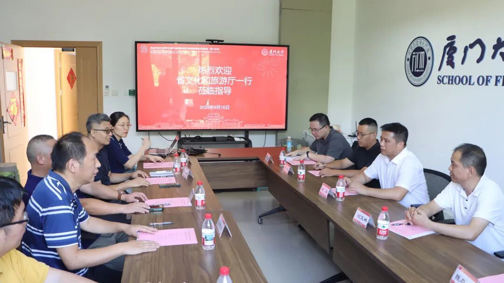

2025年9月16日下午，为落实福建省文化和旅游厅党组 “五抓五聚焦” 工作要求，推进数字文旅产品供给丰富化，省文化和旅游厅党组成员、副厅长林宇一行，莅临厦门大学闽台非遗文化数字化保护与智能处理文化和旅游部重点实验室开展调研指导。厦门大学电影学院党委书记林公明，重点实验室主任、信息学院史晓东教授，实验室副主任、建筑与土木工程学院王量量教授，以及信息学院苏劲松教授、电影学院刘昆宏教授、吴清锋教授、陈俐燕副教授，数学科学学院曹娟教授等参加调研。

调研伊始，林宇副厅长一行首先走进实验室技术成果展示区。王量量教授围绕实验室在闽台非遗文化数字化保护领域的工作定位，系统介绍了实验室近年来的技术研发方向、核心成果体系及专利布局情况，重点展现了实验室在非遗数字化保护全链条工作中的技术支撑能力，让调研团队对实验室的发展现状与技术实力有了全面认识。

随后，调研团队前往社交型机器人公共技术服务平台，实地考察实验室技术在智能交互领域的延伸应用。现场，人形机器人凭借自然对话与导航导览功能，流畅回应非遗文化问题并模拟导览路线规划；3D全息数字人以裸眼3D效果还原非遗戏曲片段，双面屏数字人展示非遗京剧文化，舞蹈机器人伴随非遗歌曲演绎传统舞蹈，提线木偶机器人则用智能控制复刻传统木偶戏表演。林宇副厅长驻足观看，就技术原理与非遗融合方式进行交流，对实验室的创新实践给予认可。

调研团队与厦门大学学院领导和专家召开专题交流会。会上，史晓东教授代表实验室汇报建设成果，除介绍实验室建设定位、科研团队搭建及关键技术突破外，重点展示了 “非遗数字基因库可视化平台”——该平台可对非遗文化数据资源进行融合呈现与智能关联展示，助力非遗资源的系统化管理与高效传播；同时详细讲解了“非遗过程数据”的采集与应用，涵盖非遗技艺或仪式的流程步骤、表演与仪式流程数据等内容，为非遗文化的活态传承与数字化研究提供了扎实的数据支撑，展现了实验室在数字文旅领域的技术储备与实践基础。

调研中，林宇副厅长强调，实验室需进一步聚焦数字文旅核心需求，发挥技术优势推动非遗数字资源与文旅场景深度融合，同时加快技术成果转化与行业标准建设，为全省数字文旅发展提供有力支撑。与会人员结合厦门文旅工作实际，围绕实验室技术在本地景区数字化升级、非遗展示传播中的落地场景展开交流，提出需加强技术与文旅需求的精准对接，明确后续将建立常态化沟通机制，推动合作落地。双方还就产学研协同、非遗数字资源共享等议题进行探讨，并达成初步共识。

此次调研不仅让福建省文旅厅深入了解闽台非遗文化数字化保护与智能处理文化和旅游部重点实验室的技术实力，更搭建起实验室与省、市文旅部门协同合作的桥梁。未来，实验室将以此次调研为契机，持续推动技术研发与文旅需求对接，为福建数字文旅产业发展注入科技动能。
福建省文旅厅资源开发处二级主任科员岑弘，省文旅厅科技教育处二级主任科员王弼，厦门市文化和旅游局资源开发处处长刘文林，公共服务处副处长陈尊慈，公共服务处干部邓文冰参加调研。